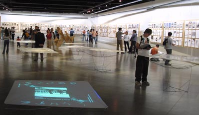
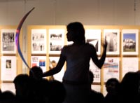

Exposición
50 años  La imagen proyectada era descompuesta por espejos para arrojar luz sobre dos superficies: A. La mayor porción era enfocada nítidamente sobre la mesa de papel kimdura con las secuencias de vídeos en el centro, imágenes fotográficas y títulos a la manera de bordes. Las secuencias de vídeo se apoyaban sobre un estructura temática de 4 temas que se repetían cíclicamente; una programación arrojaba aleatoriamente un vídeo por cada tema y se tenían aproximadamente 20 vídeos por cada uno. Los bordes, frisos debían calzar en el tiempo a estos vídeos y en su condición de marco, ubicaban al lector en cuanto a la materia expuesta desde los títulos y la imagen fija. B. La porción menor era arrojada a la mesa contigua más lejana, quedando difusa con una movilidad apenas perceptible, ya no imagen sino luz. Esta luz era el marco de la imagen contigua. A su vez, el conjunto de proyecciones enmarcaban al total de la exposición.
 |